Згорткові нейронні мережі
та комп'ютерний зір
Штучний інтелект в ігрових застосунках
Національний університет «Львівська Політехніка»
Комп'ютерний зір — навчання моделі розуміти зображення:
що на ньому присутнє, в яких відношеннях до інших обʼєктів, з якими змінами.
Зображення у широкому сенсі слова: дані, що зібрані з сенсорів реального світу або такі, що репрезентують вигаданий простір
Застосування
| Галузь | Приклади |
|---|---|
| Робототехніка | Навігація роботів, маніпуляція об'єктами |
| Автономні системи | Виявлення пішоходів, ліній, знаків |
| Медицина | Інтерпретація результатів |
| Доступність | Навігація для незрячих (Google Guideline) |
| Ігри | QA-тестування, класифікація ассетів, NPC-зір |
| Навігація | Супутникові і картографічні задачі |
| Мілтех | Terminal Guidance AI |
Базові методи
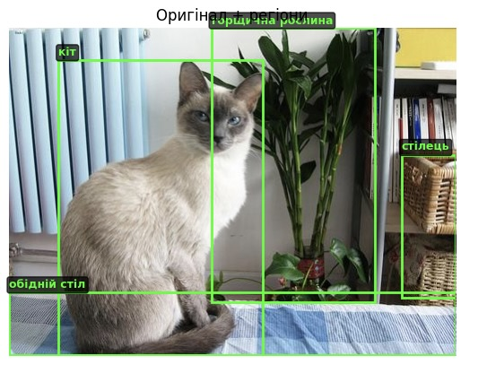
Автономні системи

Навігація і локалізація
.png)
Зображення — це числа
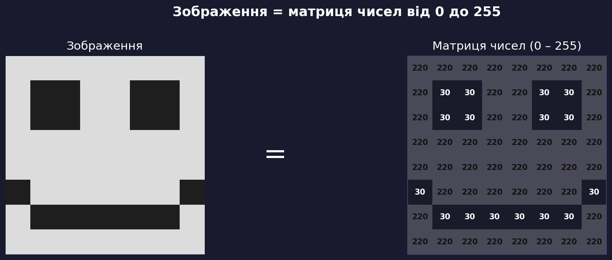
Кожен піксель = ціле число від 0 (чорний) до 255 (білий)
Кольорові зображення: RGB
■ Red — червоний канал (0–255)
■ Green — зелений канал (0–255)
■ Blue — синій канал (0–255)
Кожне кольорове зображення — три накладені матриці
Розмір RGB-зображення:
$$H \times W \times 3$$
— це вхідні дані для нейромережі
Три "класичні" задачі комп'ютерного зору
Класифікація
Що на зображенні?
Вихід — вектор імовірностей класів
Детекція об'єктів
Що і де?
Рамка (x, y, w, h) + клас для кожного об'єкта
Сегментація
Клас для кожного пікселя
«небо», «дорога», «авто», «пішохід»
Ідея: знаходити характерні ознаки
Об'єкти одного класу мають спільні візуальні ознаки (features):
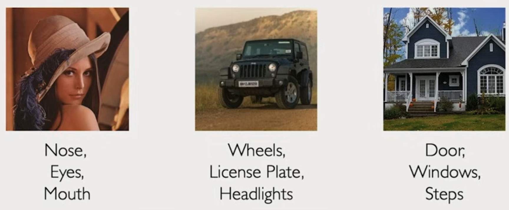
Підхід: вручну запрограмувати детектори цих ознак → класифікувати.
Що може піти не так?
Ручне виділення ознак: проблеми
Знання домену → Визначити ознаки → Класифікувати
Реальні зображення мінливі через природу цифрових даних:
- Зміна ракурсу
- Зміна масштабу
- Деформації об'єкта
- Перекриття (occlusion)
- Різне освітлення
- Злиття з фоном
Потрібен підхід, де ознаки вивчаються із даних.
Рішення: ієрархія ознак, вивчена автоматично
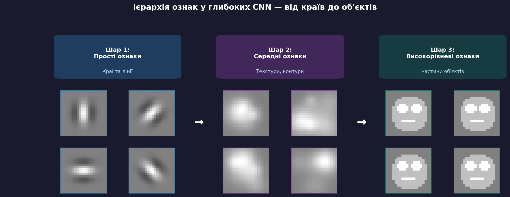
Замість ручного визначення — нейромережа сама вивчає, що важливо
Чому звичайна нейромережа не підходить?
Fully Connected (повнозв'язна) мережа:
кожен нейрон з'єднаний з кожним вхідним пікселем
Зображення 224×224×3 = 150 528 вхідів
× 1000 нейронів першого шару =
150 мільйонів ваг
тільки в першому шарі!
Як використати просторову структуру зображення?
Рішення: локальні звʼязки + sliding window
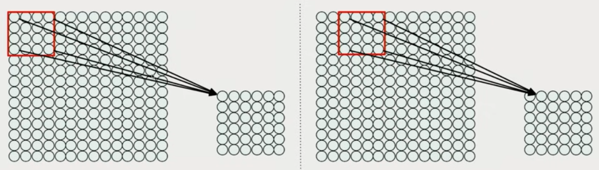
Навіщо просторова інваріантність?
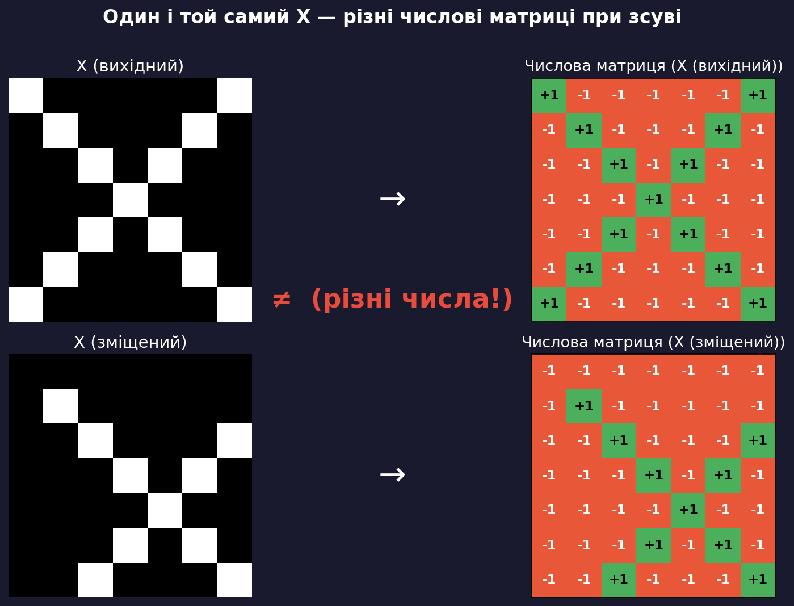
Мережа повинна розпізнавати об'єкт незалежно від позиції, масштабу, деформації
Операція згортки (Convolution)
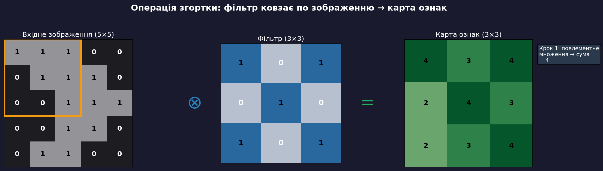
Зсув "фільтра" для кожного нового елемента → поелементне множення → сума → одне значення в карті (шарі) ознак
Приклад: детектор вертикального краю
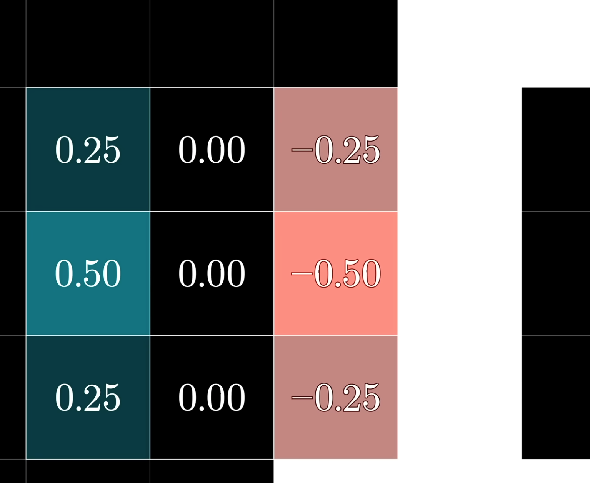
Три принципи згортки
Ваги фільтрів не задаються вручну — вони вивчаються через backpropagation
Різні фільтри — різні карти ознак
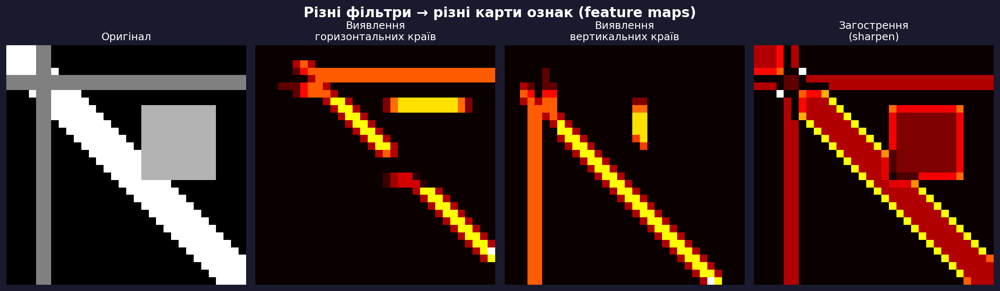
Архітектура CNN
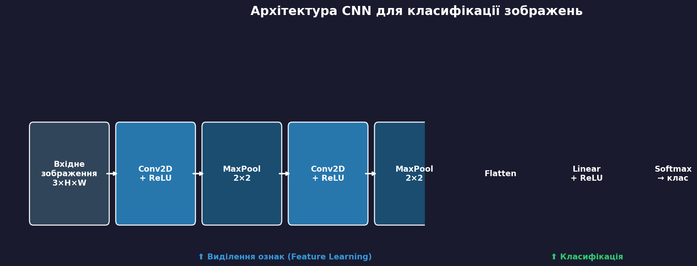
Conv2D + ReLU + MaxPool — повторюється N разів, потім Flatten → Linear → Softmax
Нелінійність: ReLU
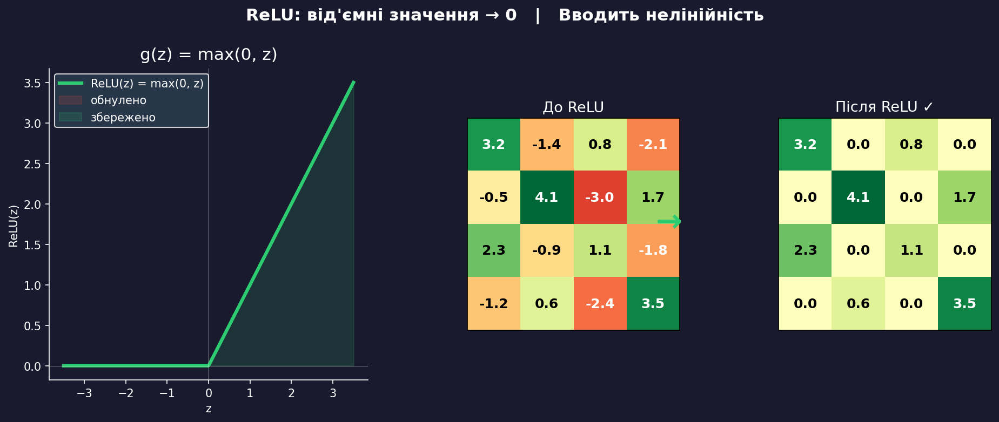
Без нелінійності — послідовність згорток = одна лінійна трансформація.
ReLU дозволяє моделювати складні нелінійні залежності.
Пулінг: зменшення розміру + інваріантність
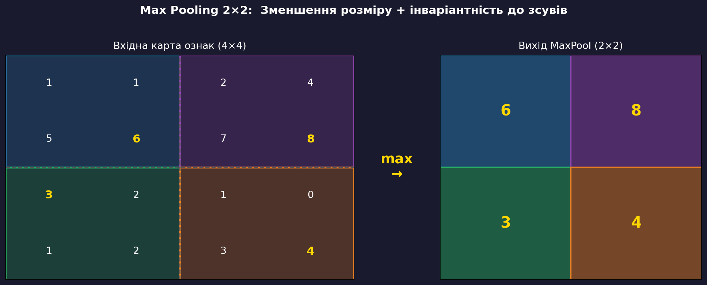
Що вивчають шари глибокої CNN?
| Шар | Що виявляє | Конкретні приклади |
|---|---|---|
| Conv 1 | Прості ознаки | Краї, лінії, плями, градієнти |
| Conv 2 | Середні ознаки | Текстури, кути, прості форми |
| Conv 3+ | Семантичні ознаки | Очі, вуха, колеса, вікна |
| FC шари | Глобальний опис | Клас об'єкта, його ймовірність |
CNN у PyTorch
import torch.nn as nn
model = nn.Sequential(
# Блок 1: RGB → 32 карти ознак
nn.Conv2d(in_channels=3, out_channels=32, kernel_size=3),
nn.ReLU(),
nn.MaxPool2d(kernel_size=2, stride=2),
# Блок 2: 32 → 64 карти ознак
nn.Conv2d(in_channels=32, out_channels=64, kernel_size=3),
nn.ReLU(),
nn.MaxPool2d(kernel_size=2, stride=2),
# Класифікатор
nn.Flatten(),
nn.Linear(64 * 6 * 6, 1024),
nn.ReLU(),
nn.Linear(1024, 10), # 10 класів → softmax у функції втрат
)
Застосування: медична діагностика
McKinney et al., Nature, 2020
Та сама архітектура CNN навчається виявляти:
- Рак шкіри за дерматологічними фото
- COVID-19 на рентгені легень
- Діабетичну ретинопатію на знімках ока
Детекція об'єктів: еволюція підходів
Задача: знайти об'єкти і обвести їх рамками $(x, y, w, h)$
Семантична сегментація: FCN
Fully Convolutional Network (FCN):
- Downsampling — згортки + пулінг → зменшення розміру
- Upsampling — транспоновані згортки (
ConvTranspose2d) → повернення до оригінального розміру
| Вхід | $3 \times H \times W$ |
| Вихід | $C \times H \times W$ (C класів) |
Transfer Learning
Autonomous Navigation/Structure from motion/Localization
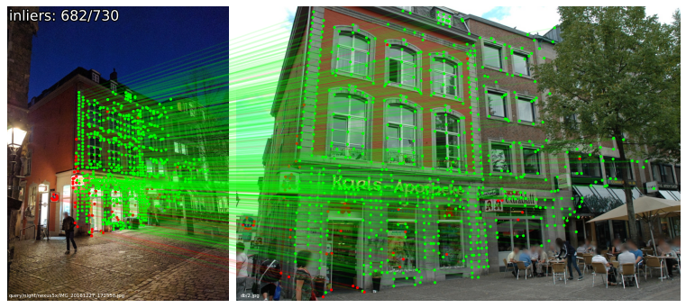
Autonomous Navigation/Structure from motion/Localization
Вхід: кадр з камери + (опційно) груба карта GPS
Вихід: команди керування — кут руля, гальмування
Модель тренується end-to-end без ручних правил.
Функція втрат: $\mathcal{L} = -\log P(\theta \mid I, M)$
CNN витягує просторові ознаки з зображення → FC-шари навчаються відображати їх на дії
Amini et al., ICRA 2019
CNN у розробці ігор
- 🎨 Класифікація ассетів
Автоматичне сортування текстур, спрайтів, 3D-моделей - 🐛 Автоматичне QA
Виявлення візуальних дефектів: артефакти рендерингу, проникнення текстур
- 🗺 Оцінка контенту
Аналіз якості процедурно згенерованих рівнів - 🕹 NPC Vision Systems
Агент «бачить» ігровий екран і приймає рішення на основі CNN-ознак
Підсумок лекції
| Концепція | Ключова ідея |
|---|---|
| Зображення = числа | Матриця пікселів $H \times W \times C$ |
| Проблема FC-мереж | Без просторової структури, занадто багато ваг |
| Згортка | Фільтр ковзає → локальні ознаки, спільні ваги |
| CNN = Conv+ReLU+Pool | Ієрархія ознак від країв до об'єктів |
| Навчання автоматичне | Ваги фільтрів — через backpropagation |
| Застосування | Класифікація, детекція, сегментація, навігація |